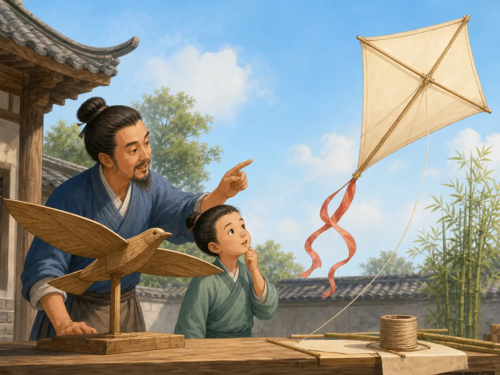
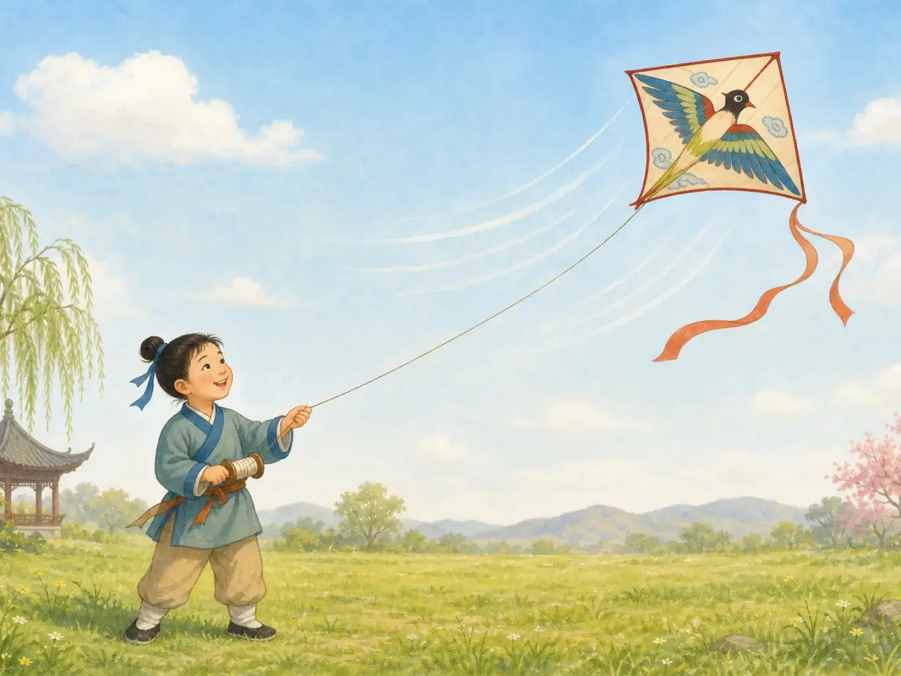
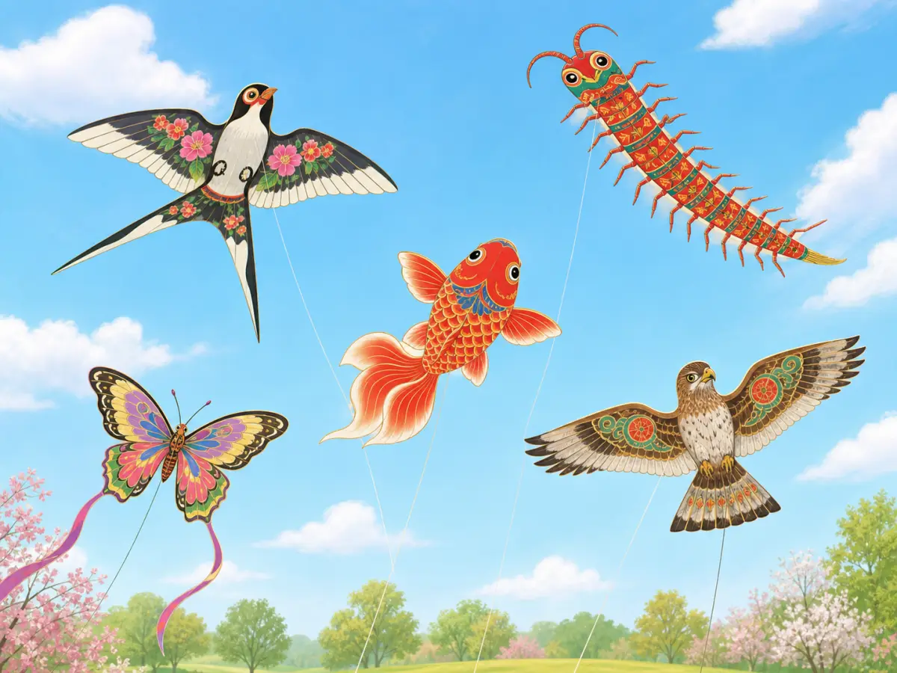
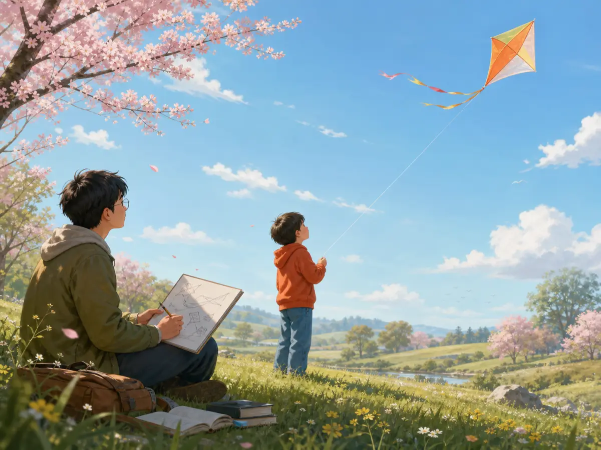

会飞的彩虹：中国的风筝
Flying Rainbows: Chinese Kites
Page 1
一只木头做的鸟
The Wooden Bird

Wooden birds came first; later, lighter bamboo and paper helped kites rise more easily.
两千多年前，一本古书里讲过一个很有意思的故事。Mòzǐ · 战国时期思想家，古书把木鸟故事与他联系起来。花了三年时间，做出了一只木鸢。终于，木鸢飞起来了。可是，只飞了一天，它就坏了。
墨子的学生觉得这已经很了不起了。能让一块木头飞到天上，还不厉害吗？墨子自己却不这么想。他说，一个木匠很快就能做出马车上的一个小零件。东西虽然小，却能帮助一辆车载着很重的货物，走很多年。自己的木鸢做了三年，却只飞了一天。
一个刚刚把木头送上天空的人，居然嫌自己的发明不够有用。这个故事没有告诉我们，那只木鸢到底长什么样。不过，它留下了一个很有意思的问题：
人做出来的东西，能不能也像鸟一样飞上天空？后来的人继续想办法。
More than two thousand years ago, an old Chinese book told a curious story about Mòzǐ · 墨子 · A Warring States thinker associated in old texts with a story about a wooden bird., a famous thinker and inventor. Mozi spent three years making a wooden kite. At last, he got it into the air. It flew for one day. Then it broke.
One of his students was amazed. Making a piece of wood fly sounded like a wonderful achievement. But Mozi was not so impressed with himself. A carpenter, he said, could quickly make a tiny wooden part for a cart, and that little part could help carry a heavy load for years. His wooden kite had taken three years to build and lasted only one day.
It is a funny answer from someone who had just made wood fly. The old story may not tell us exactly what that strange wooden kite looked like. But it shows how long people in China have been fascinated by a difficult idea:
Could something made by human hands rise into the sky like a bird? Over the centuries, kite makers found much lighter ways to try.
Page 2
竹子、纸和风
Bamboo, Paper, and Wind

A light bamboo-and-paper kite catches the wind while a child controls it with a long string.
木头很结实，可是也很重。竹子却不一样。粗一点的竹条可以撑住风筝的身体。把竹子劈得细细的，它又轻又有弹性，可以弯成翅膀、圆圆的眼睛，甚至动物身体的弧线。
外面再蒙上轻薄的丝绸，后来又有了纸。这样一来，风筝就不用再是一只沉甸甸的“木头鸟”了。几根竹条搭成骨架，外面盖上一层薄薄的纸，风就能托住它宽大的身体。
下面的人握住线。风一来，风筝就慢慢升了起来。
等人们会让风筝飞以后，下一个问题可就好玩多了：还能把什么送上天空？
Wood is strong, but it is heavy. Bamboo offered kite makers something different. A thick piece of bamboo could form the strong center of a kite. Split it thinner, and bamboo became light and flexible. It could bend into a wing, a round eye, or the curve of an animal’s body.
Then came the covering: silk, and later paper. Now a kite did not have to be a heavy wooden bird. It could have a light bamboo skeleton with a thin skin stretched across it.
The wind could catch that wide, light surface. The person below held the string. And up it went.
Once people learned how to make a kite stay in the air, they could ask a much more interesting question: What should fly next?
Page 3
把蝴蝶送上天
Put a Butterfly in the Sky

Swallows, centipedes, fish, eagles, and butterflies can all become paintings that fly.
鸟当然可以。北京有一种很有名的燕子风筝，翅膀张开，好像真的在天空里飞。可是风筝艺人很快就不满足于只做鸟了。
他们做蝴蝶，画上大大的彩色翅膀；做鱼，让本来应该在水里游的鱼跑到云下面；还把人物画到风筝上。有的风筝甚至由许多部分一节一节连起来，在天空中拖得很长。
风筝不再只是一块有尾巴的简单形状。它变成了一幅会飞的画。纸做的蝴蝶在地上一动不动，可是风一吹，它的翅膀就在天空中变得像活了一样。鱼离开水，也可以在蓝天里“游”。
红色、黄色、绿色、蓝色，一只又一只风筝升起来，原本空空的天空，好像突然变成了一本巨大的图画书。可是有一个地方的风筝艺人还觉得不够。他们不只想让风筝好看。他们还想让风筝发出声音。
A bird was an obvious choice. In Beijing, swallow-shaped kites became especially well known. But kite makers did not stop with birds.
They made butterflies with great painted wings. They made fish. They made people in colorful clothes. Some kites were built in many connected sections, stretching far across the sky.
A kite no longer had to look like a simple diamond with a tail. It could become a painting that flew. A butterfly that could never flap its paper wings on the ground suddenly looked alive when the wind lifted it. A fish that belonged in water could swim through the blue sky instead.
Kite makers painted bright colors, faces, feathers, patterns, and eyes onto the thin paper. Seen from below, the sky could begin to look like a giant moving picture book. But in one part of China, kite makers added something you could not see at all. They gave their kites a voice.
Page 4
会唱歌的风筝
A Kite That Sings

In a spring field, a child holds the string as a kite flies high in the blue sky.
在中国东部的Nántōng · 江苏的城市，以精巧的板鹞风筝闻名。，有一种很特别的bǎnyào · 南通一带著名的板形风筝，常装有竹制或葫芦制的哨子。风筝。风筝上可以装着用竹子或者葫芦做成的哨子。风筝越飞越高，风从哨子里穿过去，天空中就会传来声音。有时候，你可能还没找到风筝在哪里，就先听见它了。
同一阵风，一边托着风筝，一边又让哨子唱起歌来。风筝不只能看了。它还能听。
大约一千一百年前，春天放风筝已经成了中国人的一种娱乐。到了Qīngmíng Jié · 春天祭扫祖先、也会踏青的传统节日。时节，人们来到户外，正好赶上春风吹起。春天有风。大家抬起头。空空的天空一下热闹起来。一只燕子从树梢上飞过——等等，它下面怎么连着一根线？一只蝴蝶飞得比花还高。远处，还有一只风筝正在风里呜呜作响。
古书里的那只木鸢只飞了一天。可是那个把东西送上天空的想法，却一直留了下来。后来，木头变成了轻巧的竹条，竹条托起丝绸和纸；天空里也渐渐有了燕子、鱼、蝴蝶、人物，甚至会唱歌的风筝。几根竹条，一张轻薄的纸，一根长长的线——再加上一阵风，就够了。
In Nántōng · 南通 · A city in Jiangsu known for elaborate banyao kites., a city in eastern China, craftspeople became known for a special kind of kite called a bǎnyào · 板鹞 · A flat Nantong kite that can carry bamboo or gourd whistles.. These kites can carry whistles made from bamboo or gourds. When the kite rises and the wind rushes through the whistles, a sound comes down from the sky. You might hear the kite before you notice it.
The wind that keeps the kite flying is now doing two jobs at once. It holds the kite in the air, and it makes the whistles sing. A kite has become something to watch and something to listen to.
By about eleven hundred years ago, kite flying had also become a springtime recreation in China. People flew kites during the season of Qīngmíng Jié · 清明节 · A spring festival associated with visiting ancestors' graves and enjoying the outdoors., when families went outdoors in the mild spring weather. It is easy to see why the two belong together. Spring brings wind. People look up. And suddenly the empty sky has visitors. A swallow circles above the trees—but one thin string leads back to the ground. A butterfly floats higher than any flower. Farther away, another kite begins to hum in the wind.
The first wooden kite in that old story lasted only a day. The idea lasted much longer. Over time, wood became bamboo, bamboo held silk and paper, and simple flying shapes became birds, fish, butterflies, people—and even instruments that played in the sky. All it took was some bamboo, something light to cover it, a long string—and the wind.